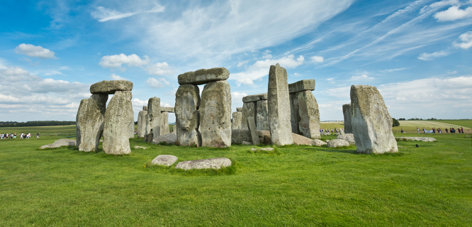
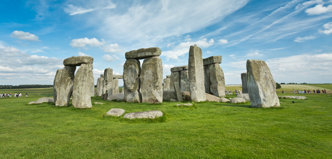

Stonehenge, England
 

I have once seen the stonehenge in England at the news feed of my facebook and it has since then amused me. Questions have repeatedly come through my head, how is the stones structured like that? Who arranged them? I no longer want to look for answers for those questions. I just want to see how beautiful and amazing it looks like in real life and not just in pictures.
Stonehenge is located in Wiltshire, England. The nearest major city is London, about 90 miles away. You can get there by: